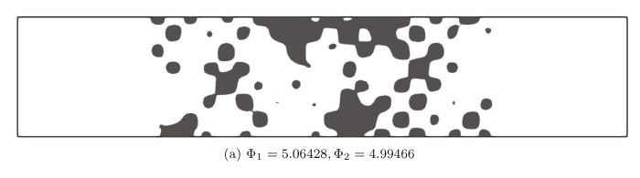
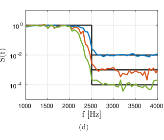

Plot comparisons
Paper geometry — Fig. 6(a)
Exact low-pass reference for b = 10⁻².

Paper transmission — Fig. 6(d)
The blue curve is the b = 10⁻² reference.

Reference: Dilgen & Aage, Fig. 6(a,d), page 13. The paper does not publish raw geometry/spectrum arrays or wall-clock runtime, so visual comparison and the reported final objective values are the honest available reference.
Derived response analysis
Transfer-function fit unavailable.
Transmission loss is \(TL(f)=-20\log_{10}|H(f)|\) dB. Broadband mean TL is the arithmetic mean across valid FFT bins from the first configured band edge to the last.
Numerical comparison
| Quantity | Paper | Implementation | Absolute difference | Relative difference |
|---|
Execution time
| Measurement | Paper | Implementation |
|---|